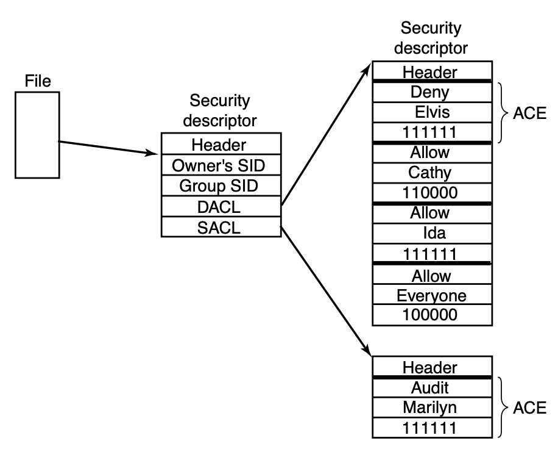

📖 Overview
The Operating System (OS) is the most critical software in a computer. It bridges the gap between hardware and user applications, handling memory management, process scheduling, file systems, and hardware abstraction.
⚙️ Architecture & Working Principle
Modern OS architecture centers around the Kernel (Monolithic, Microkernel, or Hybrid). It includes the hardware abstraction layer (HAL), system call interface, and user space applications.
The OS kernel operates in privileged mode (Ring 0), directly controlling CPU scheduling, memory allocation (paging/segmentation), and hardware interrupts via device drivers.
🖼️ Technical Diagrams

Source | License: Public Domain / Creative Commons via Wikimedia